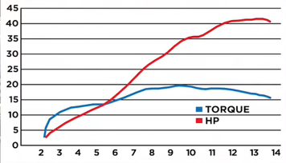

Project Summary
Challenge
Limited dyno data + partial engine access → calibrated using bench measurements, photos, and reference points. Steady-state per-RPM simulation approximates 3D flow and transient effects. Sensitive to geometric inputs (port cross-sections, manifold lengths) and combustion parameters (Vibe, efficiency)
Methodology
Enter best-known geometry → tune Vibe combustion + ignition timing to match reference torque/pressure → run parametric sweeps (one variable at time) → quantify sensitivity. 6 cycles per RPM point for convergence
Bore × Stroke: 81 × 48.5 mm
Compression: 14.5:1
Max RPM: 14,000 rpm
Cycles: 6 (default), 12 (validation)
Combustion: Vibe model
Convergence: Steady average
Key Findings
Trumpet length/diameter and valve lift profiles produce largest shifts in peak torque at high RPM. Resonant tuning shifts RPM of peak torque
Acts as amplitude multiplier on torque but doesn't shift resonant peaks. 75% → 23.4 Nm | 85% → 27.0 Nm | 95% → 30.8 Nm peak torque
Intake trumpet dia +5mm → -400 RPM, +0.8 Nm | Exhaust length -30mm → +600 RPM, -0.6 Nm | Valve lift +0.5mm → +1.2 Nm (no shift)
Model Validation
Model reproduces qualitative high-RPM torque peak and quantifies relative effects of intake/exhaust geometry. Theoretical exhaust configuration pushes peak above 12k RPM while maintaining acceptable midrange
Powercurve Comparison


Recommendations
Largest impact on high-RPM performance
Fuel/ignition improvements act as global performance multiplier
Carefully validate configurations that shift resonant peaks
Steady-state assumptions, simplified duct geometry. Further work: transient CFD or bench dyno validation for candidate configurations